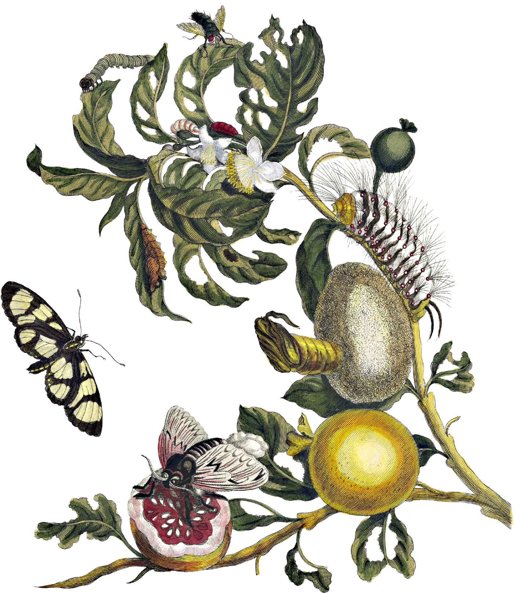

La palabra que encontraste nos adentra en la selva.
Un fin sinfin
Esto parece el final pero siempre, siempre estamos en el medio.
Pasamos buena parte de nuestras vidas corriendo a ciegas entre espacios y momentos, entre inicios y finales, tratando de entender dónde estamos parados exactamente: dónde en la historia, en qué parte de nuestra propia historia, cuál fue el principio y dónde está el final. Pero tal vez no haya principios. Tal vez no haya, tampoco, finales. Tal vez todo lo que hay es la parte de en medio, doblando una esquina y luego otra, regresando, fluyendo una y otra vez hacia sí misma. El viento sopla más y más fuerte, y nos adentramos en el rectángulo hundido de las ruinas.
Valeria Luiselli, Principio, medio, fin.
Por esto es que estar con usted no pertenece a un tiempo normal es más bien el tiempo mítico en el que no hay un tiempo medido. Es más bien una especie de kairos, ese momento justo que no se mide sino que se reconoce, es la irrupción de lo divino como lo entendían los griegos.
Es por lo tanto una fuerza vital y eso es lo que le da Sentido a todo esto que le he escrito: es el Poder de una gran fuerza vital que usted irradia.
Esto nunca será un final porque sé que a usted y a mi siempre nos queda el resto de vida.
Esta es la última canción que añadí a la playlist de Équo. Quería que cerrara porque describe esa sensación de estar con usted:
It feels like rain
Es algo que pasa por la piel, que se siente mágico y que como dice la canción surge como un huracán. Es profundamente sencillo pero se siente, tiene Sentido.